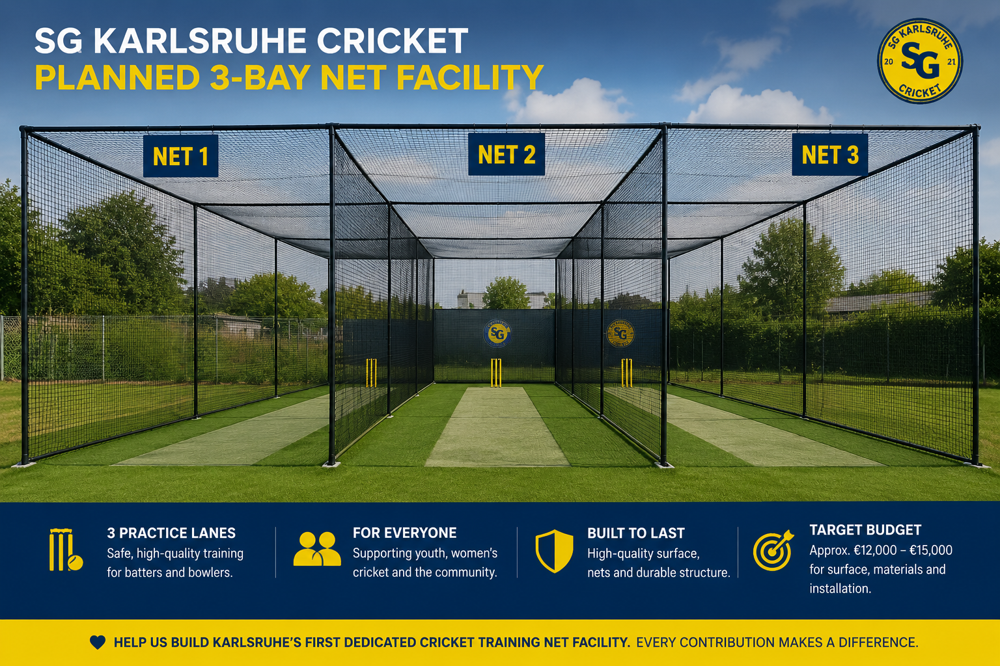

3 Training Nets
A safer and better place for young players to practise batting and bowling.
Help us build dedicated cricket training nets for youth, women and community cricket in Karlsruhe.

A safer and better place for young players to practise batting and bowling.
Approx. €12,000 – €15,000 for surface, materials and installation.
Supporting youth cricket, women’s cricket, integration and long-term club development.
€150 raised of €15,000 target
Help us build Karlsruhe's first dedicated cricket training baynet facility. Every contribution brings the project one step closer to reality.
Target completion: 2026
€500+
Name listed on sponsor page and sponsor board.
€2,000+
Logo on website, sponsor board and social media recognition.
€5,000+
Prominent logo visibility, net banner option and main sponsor recognition.
We are looking for companies, local partners and supporters who want to help us create lasting cricket infrastructure in Karlsruhe.